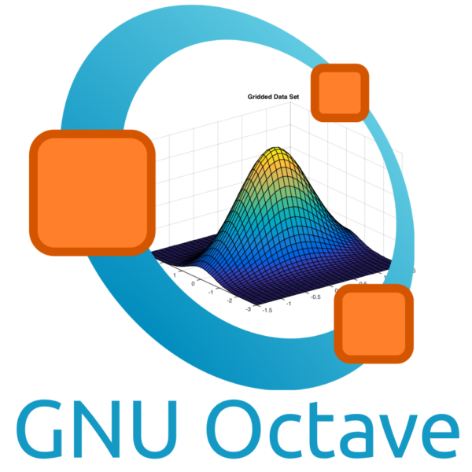

Mesdames, Messieurs, welcome to my Personal Portfolio
FARÉS Jalled M.Sc.
I'm a professional swimmer with a deep passion for running and marathon walking. I also have a strong love for STEML—Science, Technology, Engineering, Mathematics, and Languages—especially in areas like semiconductors, electronics, and programming. My journey has taken me across the globe, living in five countries on three continents, where I've enjoyed immersing myself in diverse cultures and civilizations.
If you ever need IT consultation, advice, or are interested in collaborating, please don't hesitate to email me or connect with me on social media.
Where to find me ?
Professional Experience mostly in Germany
Lynck Solution GmbH
IT Certification Training
EXIN DevOps Foundation & EXIN DevOps Master in Practice & EXIN DevOps Professional
2nd level Technical Support Customer · TSC
Electrical Tester
AC-Electrician & OpenSolar PV Module Designer
Junior Linux Systems Engineer
Berufssprachkurs
Good Mark
Scientific Assistant in Electrical Engineering
Simulation and Development of Memristive Systems and Devices
Scientific Assistant in Electrical Engineering
Simulation and Development of Memristive Systems and Devices
Electrical Engineer
High Voltage Laboratory for Lightning Tests
IT Technical Support
STUDIES & Education
Ph.D. Student in Theoretical Electrical Engineering
Ph.D. Student in Electrical Engineering
Research Project: Streamer and Corona Properties Investigation for use in Lightning Protection
Master of Science · Computer Science
With Honors · Anabin Database recognized
Nanoscale Structure of Materials & Spectroscopy Training
Research Topic: X-ray Absorption Spectroscopy Studies on Uranium Compounds
Bachelor of Science · Physics & Mathematics
Anabin Database recognized
Technical Skills
-

-

-

-

-

- 
-

-

-

-


My technical skills span a spectrum from beginner to professional expertise.

- Troubleshooting & Debugging
- Cross-Functional Team member & Flexibility
- Agile Development & Scrum
- Respect of Deadlines
- Problem solver & Good response under Pressure
Languages
I do speak
Awards & Scholarships
- German Research Foundation Ph.D. Project Winner "Memristive Devices for Neural Systems" - Ruhr-University Bochum 2018–2021
- Marie Skłodowska-Curie EU-Project Winner "SAINT: Science And INnovation with Thunderstorms" - Labelec, Dena Desarrollos, S.L. (Ingesco) - Barcelona 2018
- Russian Government Master's Degree Scholarship Winner "5/100 Russian Academic Excellence Project" - MIPT Institute - Moscow 2015-2017
Online Certifications
- Introduction to Career Skills in Software Development · LinkedIn · August 2024
- Git Fundamentals · Studytn · August 2024
- AWS Educate Getting Started with Storage · Amazon Web Services (AWS) · August 2024
- AWS Educate Introduction to Generative AI · Amazon Web Services (AWS) · August 2024
- AWS Educate Introduction to Cloud 101 · Amazon Web Services (AWS) · August 2024
- AWS Foundations: Getting Started with the AWS Cloud Essentials · Amazon Web Services (AWS) · August 2024
- Introduction to Google Workspace Admin · Google Cloud · August 2024
- DevOps Professional · Berlin · August 2024
- DevOps Master · Berlin · August 2024
- DevOps Foundation · Berlin · July 2024
- Docker Essentials: A Developer Introduction · IBM · July 2024
- Data Analytics · Google · July 2024
- Getting Started with DevOps on AWS · Amazon Web Services (AWS) · July 2024
- Introduction to the AWS Cloud Adoption Framework (CAF) · Amazon Web Services (AWS) · July 2024
- Practical GitHub Actions · LinkedIn · July 2024
- NVIDIA Programming Technology GPUs Certification · NVIDIA · March 2016
Publications
Interests
My Favourite Music
Support me
If you do enjoy the content, consider supporting my efforts to finance my IT certification exams. Your support would be greatly appreciated and will help me continue to provide valuable content. Stay tuned for thrilling updates coming your way soon!I appreciate any assistance you can offer.